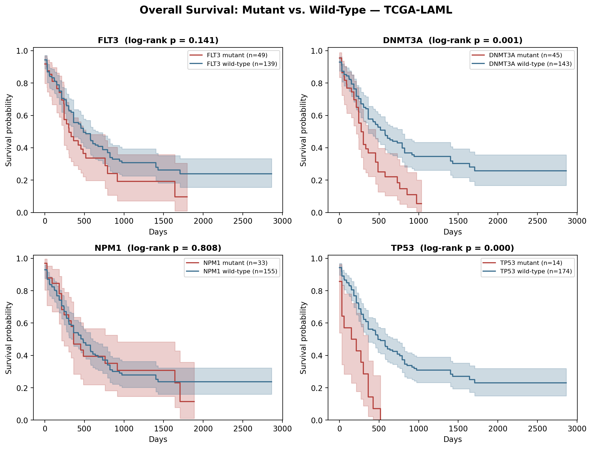

Survival Analysis Dashboard
Knowing a gene is frequently mutated (see the Mutation Landscape Explorer) doesn't tell you whether it matters clinically. This project asks the next question: do patients with a mutation in a given gene actually survive differently than patients without one? The standard tool for this is the Kaplan-Meier estimator, paired with a log-rank test for significance.
Data
Two files, same TCGA-LAML cohort, joined on patient barcode: the MAF mutation file from the first
project, and a clinical annotation file with days_to_last_followup (how long the
patient was tracked) and Overall_Survival_Status (1 = death recorded, 0 = still alive
at last contact — a "censored" observation).
A real data-cleaning problem
The clinical file uses the literal string -Inf as a placeholder for "no valid
follow-up time," which pandas silently parses as a real floating-point -inf
rather than a missing value. Left unhandled, this breaks the analysis (and would break it
silently — no error, just wrong survival curves). The fix: detect non-finite values, convert
them to NaN, and drop those patients before fitting anything.
clin["days_to_last_followup"] = clin["days_to_last_followup"].replace([np.inf, -np.inf], np.nan)
clin = clin.dropna(subset=["days_to_last_followup"])
# 200 patients -> 188 with usable follow-up timeMethod
For each gene, patients are split into "mutant" (has ≥1 mutation in that gene per the MAF file)
and "wild-type" (no mutation recorded). A Kaplan-Meier curve is fit for each group using
lifelines, and a log-rank test gives a p-value for whether the two curves differ
more than expected by chance.
Results
Run across the four most frequently mutated genes from the Mutation Landscape project:

TP53-mutant patients (n=14) show a sharp drop in survival compared to wild-type (log-rank p < 0.0001) — consistent with TP53 mutations being one of the strongest known adverse prognostic markers in AML. DNMT3A mutations are also associated with worse survival (p = 0.001). FLT3 trends toward worse survival but doesn't reach significance here (p = 0.14) — likely because this analysis lumps all FLT3 mutation types together, while in the literature it's specifically the FLT3-ITD subtype that's prognostic, not FLT3 mutations generally. NPM1 shows no difference (p = 0.81) in this simple two-group split, though NPM1's prognostic effect in AML is known to depend on FLT3 co-mutation status — a good example of why single-gene survival splits are a starting point, not the final word.
What I'd extend next
Multivariate Cox regression to test genes jointly (and adjust for age/FAB subtype), and specifically separating FLT3-ITD from other FLT3 mutation types, since ITD status is the clinically actionable distinction.